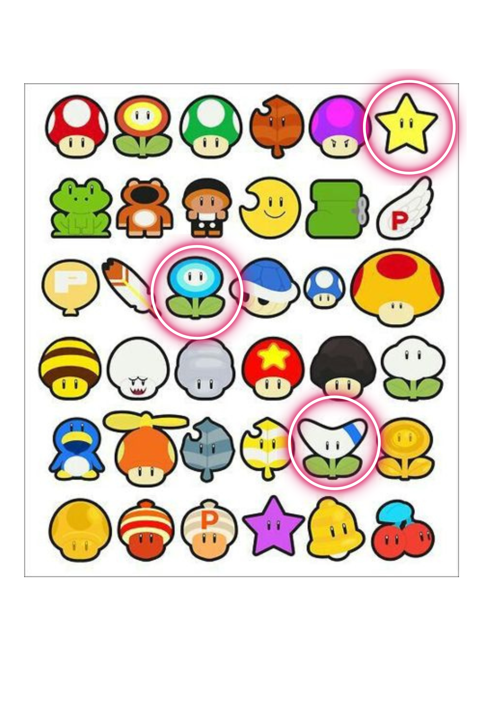
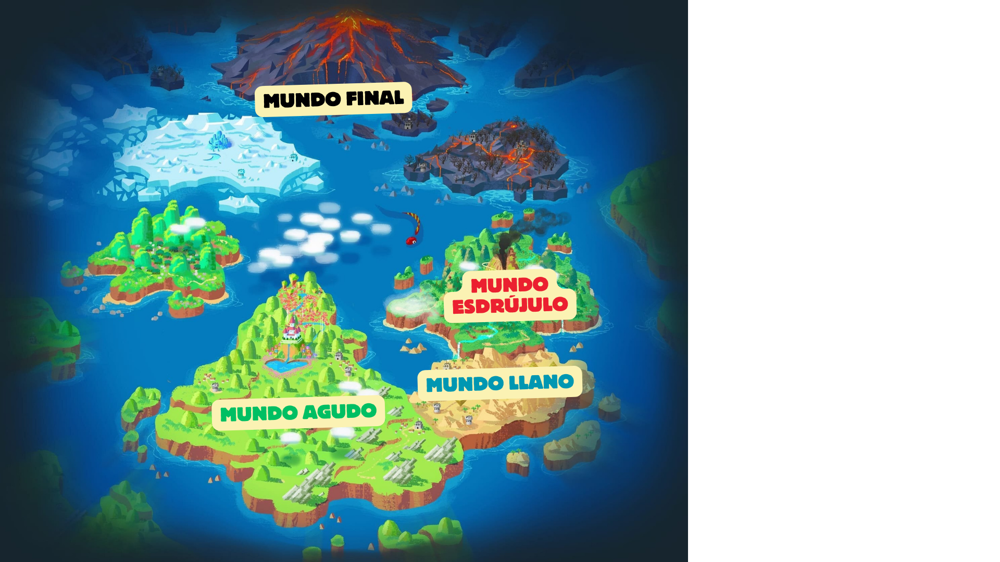

RETO
ff
ff
¿Qué os ha parecido? ¡Vaya lio en el que se ha metido Luigi! ! Pero debemos salvarlo.
Por ello tenemos un gran reto, para salvar a Luigi debemos ayudar a Mario a llegar al Mundo final, para ello deberá pasar por los tres mundos, mundo llano, agudo y esdrújulo, si conseguimos superar cada uno de los mundos conseguiréis un potenciador, ¿Sabéis de que se trata? Los potenciadores son aquellos objetos que ayudan a Mario a ser más fuerte y de esta forma podrá vencer a Bowser y salvar a Luigi.
¿Estáis preparados? ¡Vamos allá!
Debéis conseguir los potenciadores que aparecen rodeados, si superáis cada mundo os llevareis uno de Estos tres potenciadores, ¡VAMOS ALLÁ!


DEBEIS SEGUIR ESTE MAPA PARA PODER SALVAR A LUIGI

Antes de pasar al primer mundo tendréis que ver este video ya que os servirá de mucha ayuda, de esta forma tendréis una base y podréis superar cada reto, ¿Estáis preparados?
Obra publicada con Licencia Creative Commons Reconocimiento Compartir igual 4.0